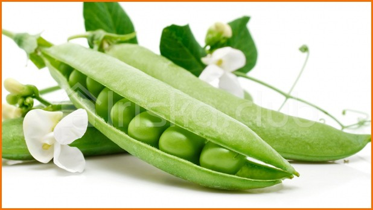

Горох, бобы и фасоль наиболее распространенные в России садоводческие культуры. Их плоды употребляют с древнейших времен. Бобы считаются наиболее древним растением. Всегда большой популярностью пользовались такие блюда, как бобовый суп с маслом и тушеные бобы. Кроме того, их полезно давать больным, страдающим заболеваниями печени, кишечника и почек.
Горох и фасоль также относятся к семейству бобовых. Горох, по мнению ученых, возделывался еще в каменном веке, а его родиной принято считать Юго-Восточную Азию, откуда он и попал на Русь. Горох обогащает почву азотом, а потому положительно влияет и на соседние растения, которые благодаря этой культуре получают дополнительное питание.
Что же касается фасоли, то она единственная из названной группы бобовых растений относится к одно– и многолетним лианам и полукустарникам. Фасоль попала в Россию из Центральной и Южной Америки (в южноамериканских субтропиках произрастает до настоящего времени более 200 ее видов) 6 тысяч лет назад.
Ученые обнаружили в экстракте масла гороха гормоноподобные целебные соединения.